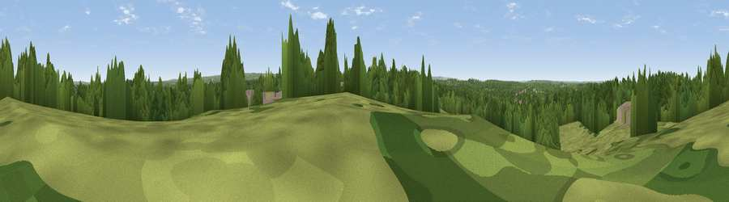

Winey Hill
#35938 in England · top 42% of its area beats it · near ClaygateThe view, rendered

A 360° render of this exact spot computed from the terrain model, tree cover and land cover — summer colours, afternoon light, calibrated against photographs of famous viewpoints. Real trees, hedges and buildings will differ in detail.
The panorama
Grey silhouette: terrain skyline in each direction (720 bearings, Earth curvature and refraction included). Dashed green: skyline with trees (+15 m) and buildings (+8 m) as obstacles. Blue strip: how far the ground is visible on each bearing.
Where the view opens
Wedge length = distance to the farthest visible ground on that bearing (vegetation-aware). Rings at 10, 25 and 50 km.
What fills the view
45% woodland · 38% grassland · 12% built-up · 3% cropland · 2% water
Angular shares of the visible panorama (visual magnitude), not map area. Landscape diversity 0.51 (0–1 Shannon).
Key numbers
More beautiful places nearby
The staircase of upgrades: each row has a higher view potential than everything closer. Driving times are estimates from straight-line distance, calibrated against real road routing — check an actual route before setting out.
| Place | Direction | Drive | Score |
|---|---|---|---|
| Viewpoint near Oxshott | SSW · 2 km | ~6 min | 50.5 |
| Box Hill | SSE · 12 km | ~22 min | 70.4 |
| Viewpoint near Box Hill Village | SSE · 12 km | ~22 min | 71.0 |
| Viewpoint near Coldharbour | S · 20 km | ~33 min | 71.3 |
| Viewpoint near Fernhurst | SW · 42 km | ~61 min | 75.1 |
| Wolstonbury Hill | SSE · 50 km | ~71 min | 79.6 |
| Chanctonbury Ring | S · 51 km | ~72 min | 87.0 |
| Firle Beacon | SSE · 65 km | ~88 min | 88.9 |
51.35225, -0.32033 · source: osm peak · position refined by local search. Computed location — check access rights before visiting.